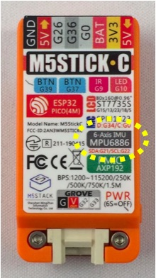
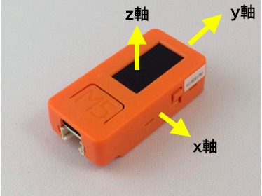
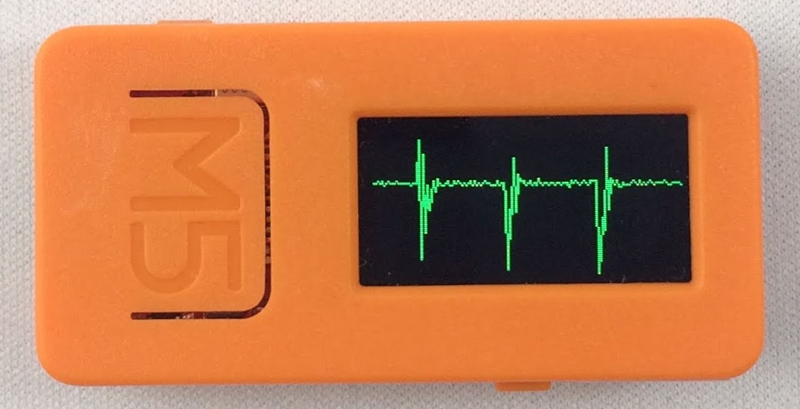
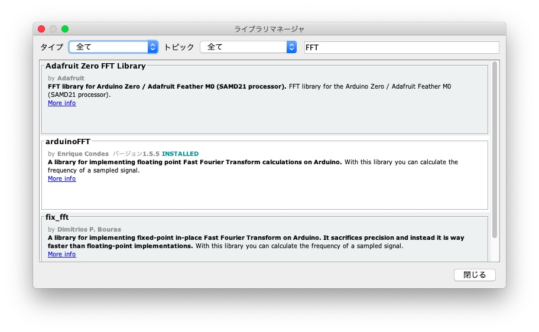
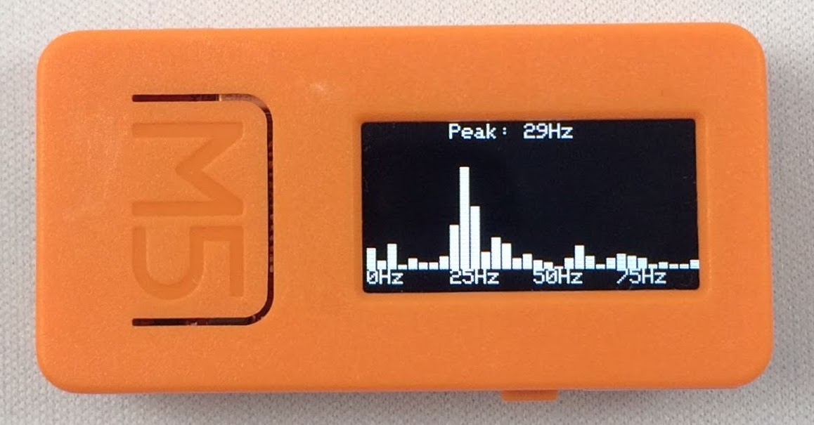

「変な音がする。」エアコンや洗濯機のような家電製品でも、工場の設備でも、音や振動の変化で異常に気がつくことがあります。多くの機械が動力としてモーターを使っていて、スムーズに回っているときは振動や音は少ないですが、軸がブレたり傷がついたりすると、通常とは違った振動や音がでることがあります。このように、機械が発する振動や音は故障の検知や予知のための基礎データです。
そこで今回はM5StickCを使って振動を測定します。
振動はモノが揺れ動くことです。 モノは3次元の中で上下、前後左右に動くので、3軸加速度センサを使うと、 振動をx軸、y軸、z軸方向の加速度として測ることができます。
M5Stackシリーズでは、Basicを除くGray、M5GO、Fireに9軸センサが内蔵されています。 9軸というのは3軸(3次元)加速度センサ、3軸ジャイロセンサ、3軸磁気センサのことです。またM5StickCには6軸センサ（3軸加速度センサ＋3軸ジャイロセンサ）が内蔵されています。
今回はM5StickCで振動を測ります。M5StickCは初期モデルにはSH200Qという6軸センサが搭載されていましたが、2019年7月以降のモデルにはMPU6886という6軸センサが搭載されています。この記事ではMPU6886を対象にします。搭載されているセンサはM5StickCの裏面のシールに書かれているので、確認できます。

M5StickCの加速度センサは、図のように左右方向がx軸、上下方向がy軸、LCD画面と垂直な方向がz軸になっています。

加速度センサMPU6886の値は次のようなライブラリ関数で読むことができます。
void getAccelData(float* ax, float* ay, float* az);
// x、y、z軸の加速度値がax、ay、azにセットされる
読み出せる加速度ax、ay、azの単位はGで、M5StickCをLCD画面を上にして水平に置いた時、x軸、y軸の値ax、ayがほぼ0(G)、z軸の値azは重力の影響を受けてほぼ1.0(G)です。加速度センサはとても敏感なセンサで、細かな揺れを検知して値が変化します。
では、加速度センサにアクセスして、加速度値をLCDにグラフ表示してみましょう。揺れは上下、前後左右の3次元の動きですが、LCD画面と垂直な方向、つまりz軸方向の動きに着目してグラフ表示してみます。プログラムは次のようになります。
M5StickCのLCD画面は横方向80ピクセル、縦方向160ピクセルですが、グラフが見やすくなるように、90度回転させて、横長にして表示します。
setup関数の8行目でLCD画面を90度回転させ、9行目でMPU6886を初期設定しています。
loop関数では、20ミリ秒ごとにM5.MPU6886.getAccelData関数で加速度センサの値を読み出しています。センサ値を折れ線グラフで表示するために、1つ前の値と現在の値を使います。折れ線グラフを表示するだけなら2つの値を覚えていればよいのですが、150個の配列を作り、z軸の加速度値を保持するようにしました。
MPU6886から読み出せる加速度値はGですが、1000倍してmG（ミリG）で扱います。机の上にM5StickCを置いて、机を叩いて実験したところ、値が600mGから1400mG程度に変化したので、その範囲でM5StickCのLCD画面に表示するようにしました。加速度値az（ミリG）の値を縦軸（y軸）の値に変換するにはmap関数を使います。
map(value, low, high, toLow, toHigh);
y = map((int)az, 600, 1400, 80, 0); // 加速度値をy軸座標に変換する
map関数はlowからhighまでの値（value）をtoLowからtoHighに比例計算してくれる関数です。LCD画面の場合、画面の左下が(0,80)なので、加速度値が600mGのときにy軸の値が80、加速度値が1400mGのときにy軸の値が0になるように変換します。
1つ前の加速度値と現在の加速度値をそれぞれy軸値に変換し、M5.Lcd.drawLine関数で1区間ずつ線を書いて、折れ線グラフにしています。
プログラムをビルドしてM5StickCに書き込みます。M5StickCを机の上に置いて、机をトントンと叩くと、LCD画面のグラフに振動が表示されるのが確認できます。

加速度センサから値を取得してから折れ線グラフを書くまでの時間をmicros関数を使って次のようにして測定したところ、999マイクロ秒、約1ミリ秒でした。micros関数はプログラム開始からの経過時間をマイクロ秒で返す関数です。ある処理の前後でmicros関数を呼んで経過時間を測り、その差を取ることで、その処理にかかる時間を測れます。
long t = micros(); // 開始時刻を記録
加速度センサから値を取得;
y軸の値を計算;
折れ線グラフを書く;
t = micros() - t; // 開始時刻からの経過時間を取得
M5.Lcd.print(t); // 経過時間を表示
delay関数で20ミリ秒待つと、実際の測定間隔はセンサへのアクセスやグラフ描画にかかる約1ミリ秒が加わり約21ミリ秒になります。次のようにfor文の先頭で開始時刻を記録し、処理にかかる時間を計算し、処理時間を補正して待つようにすると、より正確に周期処理が実現できます。マイクロ秒単位で待つためにdelay関数の代わりにdelayMicroseconds関数を使います。
for (int i = 0; i < SAMPLE_SIZE; i++) {
long t = micros(); // 開始時刻を記録
加速度センサから値を取得;
y軸の値を計算;
折れ線グラフを書く;
delayMicroseconds(SAMPLE_PERIOD * 1000 - (micros() - t));
}
さらに正確に周期処理を実現するには、タイマ割り込みを使う方法もありますが、今回は割愛します。
振動には揺れの周期があります。 1秒間に揺れる回数がその振動の周波数です。 一般的に振動はいくつかの要因が影響しているので、 周波数もいくつかの周波数が組み合わさっています。 また、傷や亀裂、ゆるみなどが発生すると周波数の分布が変わります。 そこで、振動の周波数ごとの強さ（周波数成分）を調べてみます。
振動の周波数成分を調べるには、FFT(高速フーリエ変換)解析がよく使われます。 Arduinoで動くFFTライブラリはいくつかありますが、 Arduino IDEのライブラリマネージャからインストールできるarduinoFFTを使います。
Arduino IDEの「ツール」メニューの「ライブラリを管理…」を選択して ライブラリマネージャを立ち上げ、右上の検索窓に「fft」と入力します。 いくつかFFTライブラリが表示されますが、その中の「arduinoFFT by Enrique Condes」を インストールします。

arduinoFFTライブラリには2種類のインタフェースがあります。例えば周波数ごとの信号強度を計算するComplexToMagnitudeという関数には次の2種類があります。
void ComplexToMagnitude();
void ComplexToMagnitude(double *vReal, double *vImag, uint16_t samples);
ライブラリと一緒にインストールされるプログラム例は2行目のインタフェースを使っていますが、ライブラリのソースコードを見るとこのインタフェースは非推奨(deprecated)と書かれているので、この記事では1行目のインターフェースを使います。推奨されているインタフェースは次のようなものです。
arduinoFFT(double *vReal, double *vImag, uint16_t samples, double samplingFrequency); // コンストラクタ
void ComplexToMagnitude(); // 周波数ごとの信号強度を計算する
void Compute(uint8_t dir); // FFTを計算する
double MajorPeak(); // ピーク周波数を返す
void MajorPeak(double *f, double *v); // ピーク周波数と信号強度を返す
void Windowing(uint8_t windowType, uint8_t dir); // 窓関数を適用する
// windowTypeには以下の値が指定できる
#define FFT_WIN_TYP_RECTANGLE 0x00 /* rectangle (Box car) */
#define FFT_WIN_TYP_HAMMING 0x01 /* hamming */
#define FFT_WIN_TYP_HANN 0x02 /* hann */
#define FFT_WIN_TYP_TRIANGLE 0x03 /* triangle (Bartlett) */
#define FFT_WIN_TYP_NUTTALL 0x04 /* nuttall */
#define FFT_WIN_TYP_BLACKMAN 0x05 /* blackman */
#define FFT_WIN_TYP_BLACKMAN_NUTTALL 0x06 /* blackman nuttall */
#define FFT_WIN_TYP_BLACKMAN_HARRIS 0x07 /* blackman harris*/
#define FFT_WIN_TYP_FLT_TOP 0x08 /* flat top */
#define FFT_WIN_TYP_WELCH 0x09 /* welch */
加速度センサの値を取得して、FFT解析をおこない、周波数ごとの信号強度をLCDに表示するプログラムは次のようになります。
10行目でFFT解析をおこなうオブジェクトを作り、52行目から59行目で加速度センサの値を取得しています。FFT解析は62行目から64行目でおこなっています。61行目のDCRemoval関数は信号の直流成分を除去する関数です。
これでvReal[]に周波数ごとの信号強度が計算されます。17行目からのdrawChart関数で信号強度を棒グラフでLCDに表示しています。
プログラムをビルドしてM5StickCで実行し、机をトントンと叩くと、次のように振動の周波数ごとの強度が表示されます。

このプログラムでは5ミリ秒ごとに加速度センサの値を調べています。このように一定の間隔でデータを調べることをサンプリングといい、1秒間にサンプリングする回数をサンプリング周波数といいます。5ミリ秒ごとにデータを調べたときのサンプリング周波数は200Hzになります。
加速度センサから加速度を取得するM5.MPU6886.getAccelData関数の処理時間をmicros関数で調べたところ942マイクロ秒だったので、1ミリ秒ごとにサンプリングすることができそうです。このときのサンプリング周波数は1kHzになります。
サンプリングでは、サンプリング周波数の半分の周波数の信号が解析できることが知られています。サンプリング周波数が200Hzの場合、100Hzまでの振動が解析できます。
このプログラムにはもう一つ、サンプル数FFTsamplesというパラメータがあります。このプログラムでは64にしています。この数を多くすると解析に時間がかかりますが、細かい周波数の幅で振動の強さを調べることができます。サンプル数64の場合、直流分を除去して（DCRemovel）、窓関数を適用し（FFT.Windowing）、FFT解析をおこない（FFT.Compute）、複素数を実数に変換する（FFT.ComplexToMagnitude）までの時間は1916マイクロ秒でした。これで32区間の周波数帯で振動の強さが調べられます。
M5StickCは加速度センサが内蔵されているので、本体だけで簡単に振動を測定できます。振動は機械などの稼働や故障を検出するための基礎になるデータです。振動の測定にM5StickCを活用してみてはいかがでしょうか？